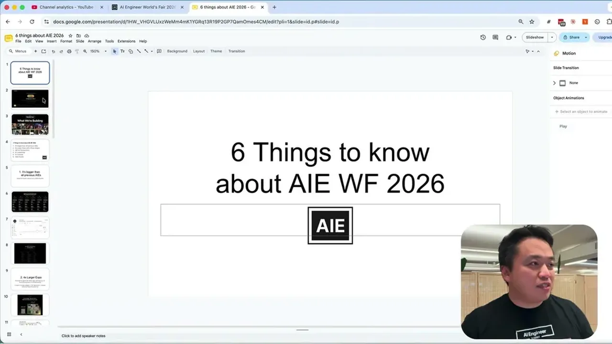
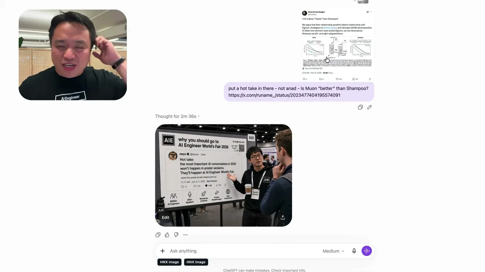
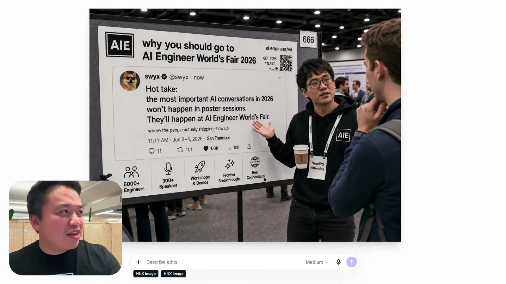
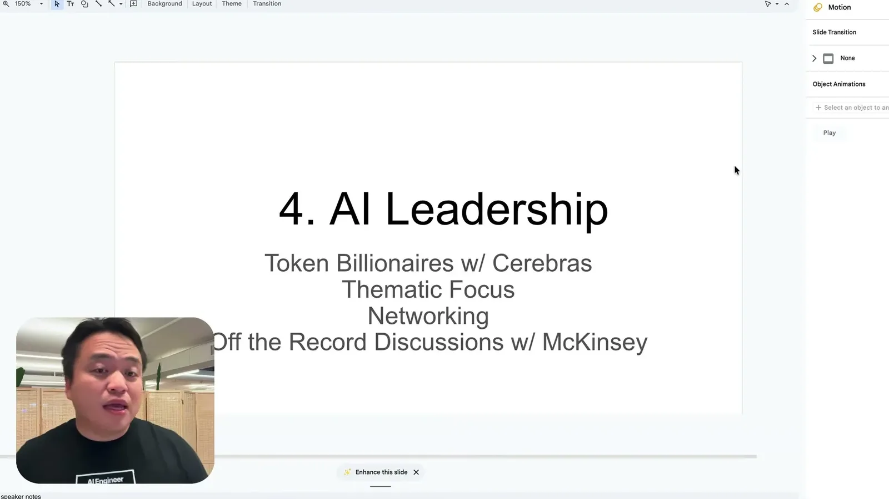
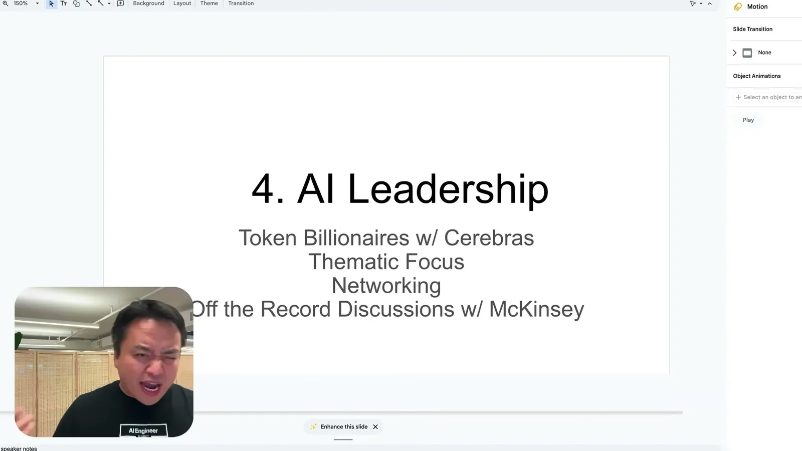
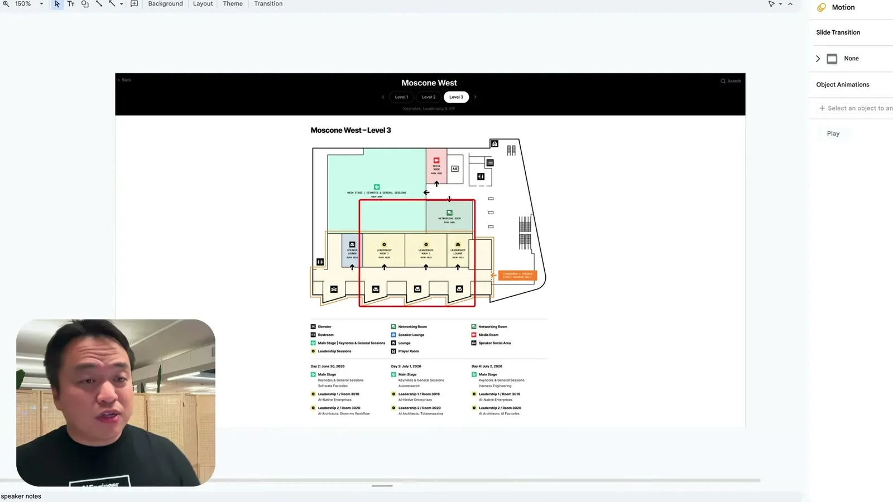
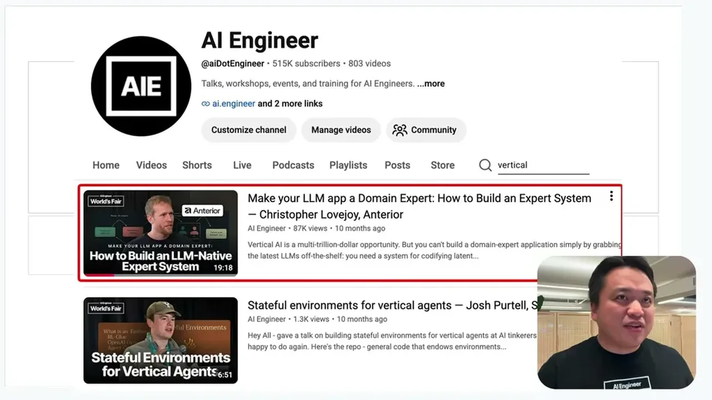
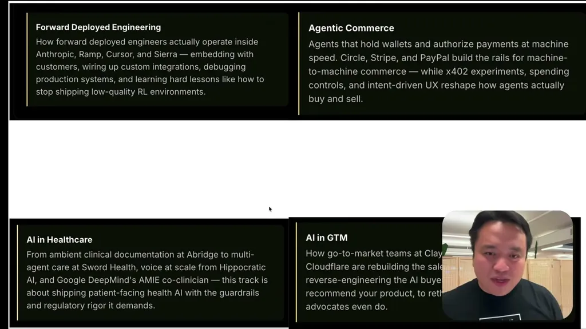

A logistics and programming preview from AI Engineer's co-founder rather than technical content, but useful for deciding whether to attend World's Fair 2026 and what to prioritize once there (new vertical tracks, the leadership/token-bil...
This traces Swix's own promotional narrative from claimed event growth through programming choices (verticals, leadership floor) to downstream commitments like the finance-focused NY conference and new-attendee onboarding; it is the organizer's framing, not independently verified (ours).
“it's bigger than all the previous AIEs. I almost wanted to say it's all previous AIEs combined, but that's not exactly true cuz if you do the math, we actually we're we're a little bit over that”
said at 01:01“Our top tracks are like auto research that didn't exist last last year. We've split out um the sort of GPUs track into inference and post-training and pre-training”
said at 02:33“Compared to last year, this is how it was last year for 2025. It is roughly 4x bigger”
said at 04:35“if you spend something on the order of uh a billion tokens a month, that's actually a really low bar for some of these people. Some of them spend 10 trillion a month”
said at 09:57“we are also going to pre-announce AI engineer New York. Um this is our third New York conference now, but our first entirely focused on finance”
said at 13:00“So far we have 300 people signed up. I think this is going to go to 1,000 people”
said at 15:05The pivot to vertical tracks (finance, healthcare, agentic commerce, GTM) with finance singled out as the lead bet is a reasonable industry-adoption signal to track against Andrew's own AI-PM/client deployment interest, though it's the organizer's own promotional read on where deployment is headed rather than independently verified data (ours).








| Stance | Claim | t |
|---|---|---|
| asserts | AI Engineer World's Fair 2026 is expected to be larger than all previous AIE events combined by attendee count. | 01:01 |
| asserts | New top tracks for 2026 include auto-research, a GPU track split into inference/post-training/pre-training, and new memory/continual-learning and vertical tracks. | 02:33 |
| asserts | The 2026 Expo is roughly 4x bigger than 2025's, and AI Engineer is positioning itself as the industry counterpart to academic conferences like ICML and NeurIPS, including an ACM-partnered co-located conference. | 04:35 |
| asserts | A new leadership program called 'token billionaire' targets attendees or orgs spending on the order of a billion tokens a month, with some spending 10 trillion a month, offering a dedicated lounge. | 09:57 |
| asserts | For 2026 the event organizes around four deployed verticals (agentic commerce, healthcare, finance, GTM), with AI in finance as the flagship bet tied to a new finance-focused AI Engineer New York conference. | 13:00 |
| asserts | The event is running a new NEO orientation night for solo or new attendees, with about 300 signed up and an expectation of reaching 1,000. | 15:05 |
Machine-readable copy embedded in this page (script#ontology) and in the corpus ontology.